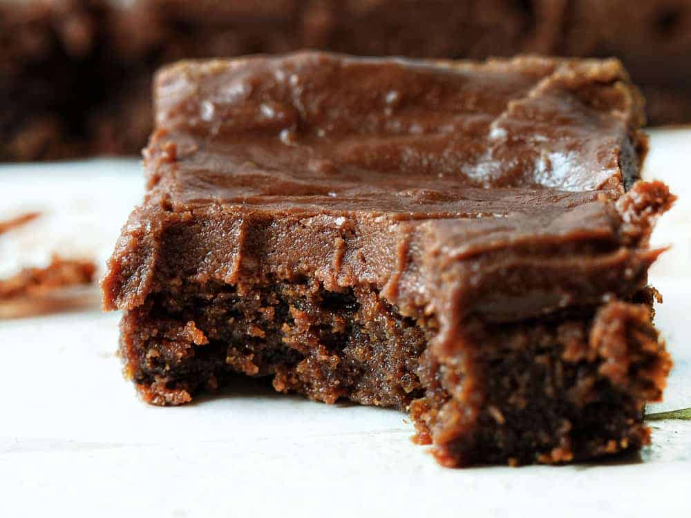

These brownies are fudgy, thick, and loaded with chocolate!
The Perfect Brownie

Brownie Ingredients
- 1 cup unsalted butter
- 2 cups granulated sugar
- 4 large eggs
- 1 cup all-purpose flour
- 12-14oz. Hershey Syrup
Frosting Ingredients
- 2 cups sugar
- 1 cup butter
- 1 tsp. vanilla
- 1/2 cup milk
- 1 small package chocolate chips
Instructions
- Preheat oven to 350°F.
- We're going to start with making the brownies. Put all ingredients in a bowl and mix well.
- Put brownie mix into a greased and floured pan.
- Bake until a toothpick comes out uncovered in batter.
- Next move to the frosting. Boil the sugar, butter, vanilla, and milk for 1 min.
- Remove from the stove and add in a bag of chocolate chips. Beat frosting until you can see ridges in frosting from the beater.
- Pour the frosting on top of the cooled brownies.
- Let cool before cutting into squares and serving.